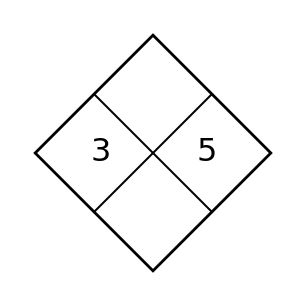
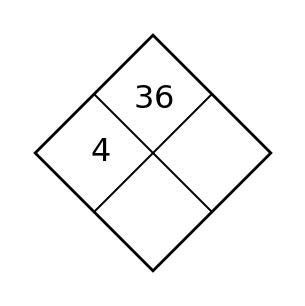
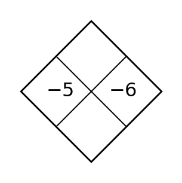
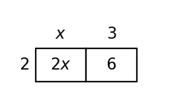
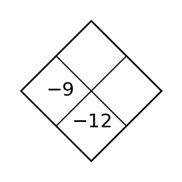
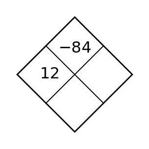
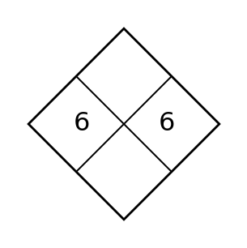
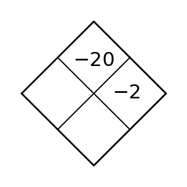
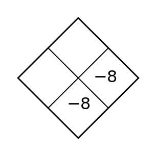

Section 1.1 — Day 1
Complete each sign statement without calculating the exact value.
- $(-)(-)=$ ____
- $(+)-(-)=$ ____
- $(-)\div(+)=$ ____
- $(-)+(-)=$ ____
Simplify each quotient.
- $-\frac{3}{4}\div\frac{9}{10}$
- $\frac{5}{6}\div\left(-\frac{2}{3}\right)$
- $-1\frac{1}{8}\div2\frac{3}{4}$
Spiral: Which point in the table lies on the $x$-axis? Name the $x$-intercept.
| Point | $x$ | $y$ |
|---|---|---|
| A | -3 | 0 |
| B | 0 | 6 |
| C | 2 | 10 |
Formative Spiral: Use the diamond. The top number is the product of the two side numbers, and the bottom number is their sum. Fill in the missing cell(s).

Section 1.1 — Day 2
For the point $(6,18)$ in a distance graph, which coordinate is the input?
For the graph shown, identify the $x$-intercept and $y$-intercept.

Spiral: Compute.
- $10\frac{7}{9}+\left(-9\frac{2}{3}\right)$
- $-10\frac{7}{10}-2\frac{3}{5}$
- $\left(4\frac{1}{2}\right)\left(-3\frac{3}{10}\right)$
Formative Spiral: Use the diamond. The top number is the product of the two side numbers, and the bottom number is their sum. Fill in the missing cell(s).

Section 1.1 — Day 3
Create a table with four input-output pairs for $y=2x-3$, using inputs of your choice. Then state one pattern you notice.
Use the graph shown to estimate whether the relationship is increasing or decreasing, then support your answer with two coordinate features.

Spiral: Two expressions are used for a repeated calculation: $3(x+4)$ and $3x+4$. Evaluate both for $x=5$ and explain which expression represents tripling the entire quantity $x+4$.
Formative Spiral: Use the diamond. The top number is the product of the two side numbers, and the bottom number is their sum. Fill in the missing cell(s).

Section 1.2 — Day 1
Evaluate each expression and state if the value is undefined.
- $\frac{9}{3-3}$
- $\frac{-12}{2-5}$
- $\frac{x+1}{x-4}$ for $x=4$
Write the first three operations you would perform when evaluating $4[9-2(3+1)]^2$. Then find the value.
Spiral: Which ordered pair has the greater $y$-value: $(-4,{6})$ or $({5},{2})$? State only the evidence from the coordinates.
Formative Spiral: Use the diamond. The top number is the product of the two side numbers, and the bottom number is their sum. Fill in the missing cell(s).

Section 1.2 — Day 2
If a rule gives output $0$ for input $-3$, write the ordered pair.
Explain the difference between the ordered pairs $({3},{8})$ and $({8},{3})$ in terms of input and output.
Spiral: Evaluate each expression.
- $2\div|3-4|$
- $11|-6|+15$
- $-19+\sqrt[3]{-8}$
- $-11-\sqrt{16}$
Formative Spiral: Use the diamond. The top number is the product of the two side numbers, and the bottom number is their sum. Fill in the missing cell(s).

Section 1.2 — Day 3
For $f(x)=|x-3|+5$, find all input values that give an output of $10$.
For a graph of total cost versus number of notebooks, the point $({0},{2})$ appears before any notebooks are bought. Interpret this point and decide whether it is reasonable.
Spiral: Factor $12x+18$ and $8x-20$. Then explain how you know your factors preserve the original expressions.
Formative Spiral: Use the diamond. The top number is the product of the two side numbers, and the bottom number is their sum. Fill in the missing cell(s).

Section 1.3 — Day 1
State whether each pair is equivalent for all values of the variable.
- $2(x+3)$ and $2x+6$
- $x+x+x$ and $x^3$
- $5a-2a$ and $3a$
Write an expression for the perimeter of a rectangle with length $x+4$ and width $x-1$. Then simplify.
Spiral: A pattern starts at ${2}$ and adds ${5}$ each step. What are the first four outputs for inputs ${0}$, ${1}$, ${2}$, and ${3}$?
Formative Spiral: Use the diamond. The top number is the product of the two side numbers, and the bottom number is their sum. Fill in the missing cell(s).

Section 1.3 — Day 2
What family often has a graph shaped like a V?
For the rule $y={10}-x$, find the output when $x={4}$.
Spiral: Use the area model to write the product as a sum.

Formative Spiral: Use the diamond. The top number is the product of the two side numbers, and the bottom number is their sum. Fill in the missing cell(s).

Section 1.3 — Day 3
Compare graphs A and B using evidence from the axes. For each graph, estimate at least two points near the turning point and use symmetry or output changes to identify the likely family.

Use the table to write a rule in words and symbols.
| Input | 0 | 1 | 2 | 3 | 4 |
|---|---|---|---|---|---|
| Output | 3 | 7 | 11 | 15 | 19 |
Spiral: Solve $7-3(x-2)=22$. Explain how distribution affects the following inverse operation.
Formative Spiral: Use the diamond. The top number is the product of the two side numbers, and the bottom number is their sum. Fill in the missing cell(s).

Section 1.4 — Day 1
Find the inverse operation needed first.
- $x-8=11$
- $\frac{x}{5}=-3$
- $-4x=28$
- $x+\frac{2}{3}=1$
Solve.
- $8x+1=-x-1$
- $4-5x=1+6x$
- $7-x+3=9x+10$
Spiral: A machine uses the rule $y={3}x+1$. Find the output when the input is ${7}$.
Formative Spiral: Use the diamond. The top number is the product of the two side numbers, and the bottom number is their sum. Fill in the missing cell(s).

Section 1.4 — Day 2
Which expression is equivalent to $x+x+x+x$?
Write one possible input-output rule for the pairs $({1},{6})$, $({2},{7})$, $({3},{8})$.
Spiral: Substitute the proposed value to decide whether it is a solution.
- $2x-5=9$, $x=7$
- $3x+1=x+13$, $x=5$
- $-4x=20$, $x=-5$
Formative Spiral: Use the diamond. The top number is the product of the two side numbers, and the bottom number is their sum. Fill in the missing cell(s).

Section 1.4 — Day 3
A perimeter is represented by $2(3x+4)+2(x+6)$. Rewrite the expression in simplified form and explain what was doubled.
A table begins with input ${0}$ and output ${7}$. Each time the input increases by ${1}$, the output increases by ${6}$. Complete five rows and write the symbolic rule.
Spiral: A student must score more than $84$ points total. The student has $31$ points and earns $p$ points per round for $4$ rounds. Write and solve an inequality for $p$.
Formative Spiral: Use the diamond. The top number is the product of the two side numbers, and the bottom number is their sum. Fill in the missing cell(s).

Section 1.5 — Day 1
State whether each inequality is true or false.
- $|-6|\lt 4$
- $|-3+5|\gt 2.5$
- $4\ge |0|$
- $|-4+1|\le3$
Solve each one-step inequality.
- $x+4\lt 9$
- $m-7\ge -2$
- $\frac{p}{3}\gt 5$
- $-2q\le 10$
Spiral: Complete the next output if the rate of change is ${4}$.
| Input | 1 | 2 | 3 | 4 |
|---|---|---|---|---|
| Output | 9 | 13 | 17 | ? |
Formative Spiral: Use the diamond. The top number is the product of the two side numbers, and the bottom number is their sum. Fill in the missing cell(s).

Section 1.5 — Day 2
For the equation $5x=35$, name the operation you would use to isolate $x$.
Which description has a constant rate: adding ${3}$ pages every night or doubling pages every night?
Spiral: For each inequality, state whether the boundary point should be open or closed on a number line.
- $x\lt 3$
- $x\le3$
- $x\gt -1$
- $x\ge -1$
Formative Spiral: Use the diamond. The top number is the product of the two side numbers, and the bottom number is their sum. Fill in the missing cell(s).

Section 1.5 — Day 3
Check the proposed solution. A student says $x=5$ solves $7x-4=31$. Substitute and decide whether the solution is correct.
Complete the table for a pattern that starts at ${5}$ and increases by ${3}$ for each new figure.
| Figure | 0 | 1 | 2 | 3 | 4 | 5 |
|---|---|---|---|---|---|---|
| Tiles | 5 |
Spiral: Evaluate $\left(-\frac{3}{5}+1.4\right)\div\left(-0.2\right)$. Show the order of operations and include at least one check for sign reasonableness.
Formative Spiral: Use the diamond. The top number is the product of the two side numbers, and the bottom number is their sum. Fill in the missing cell(s).
